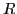

A new algorithm based on algebraic multigrid is presented for computing the rank-

canonical decomposition of a tensor for small . Standard alternating least squares (ALS) is used as the relaxation method. Transfer operators and coarse-level tensors are constructed in an adaptive setup phase that combines multiplicative correction and Bootstrap algebraic multigrid. An accurate solution is computed by an additive solve phase based on the Full Approximation Scheme. Numerical tests show that for certain test problems, our multilevel method significantly outperforms standalone ALS when a high level of accuracy is required.